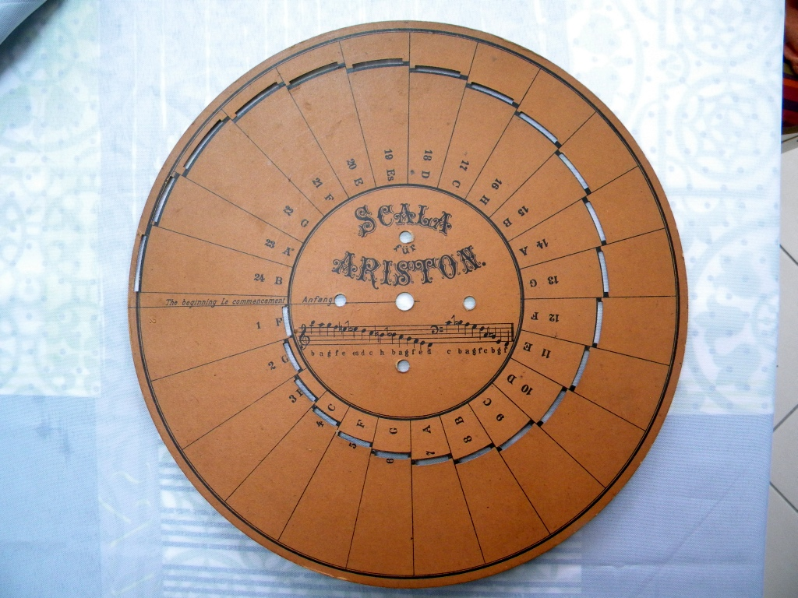
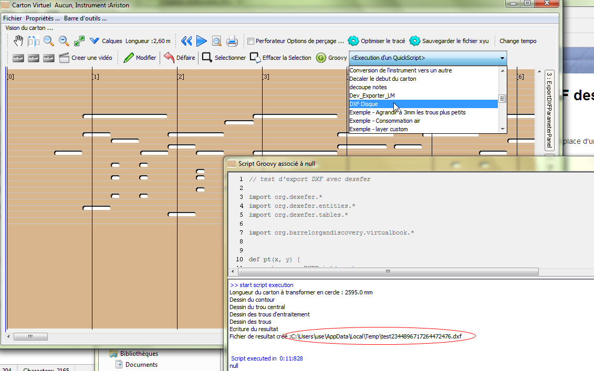
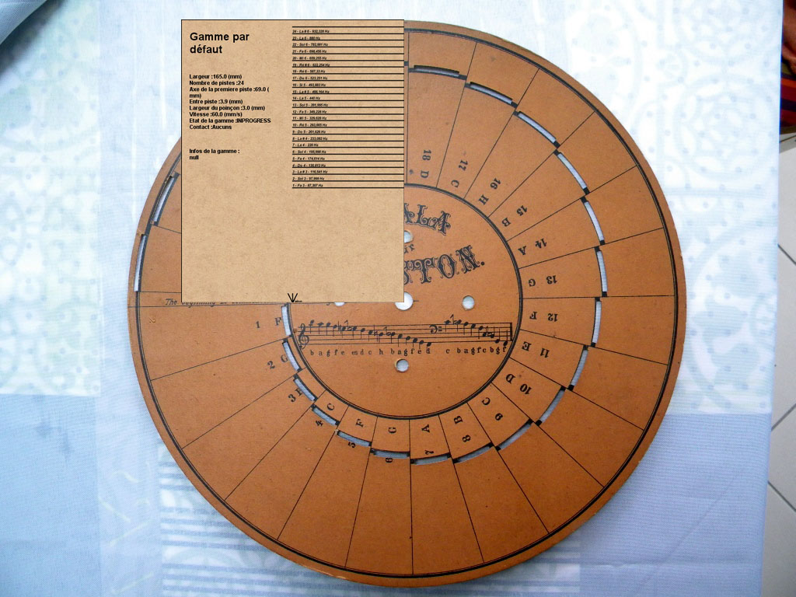
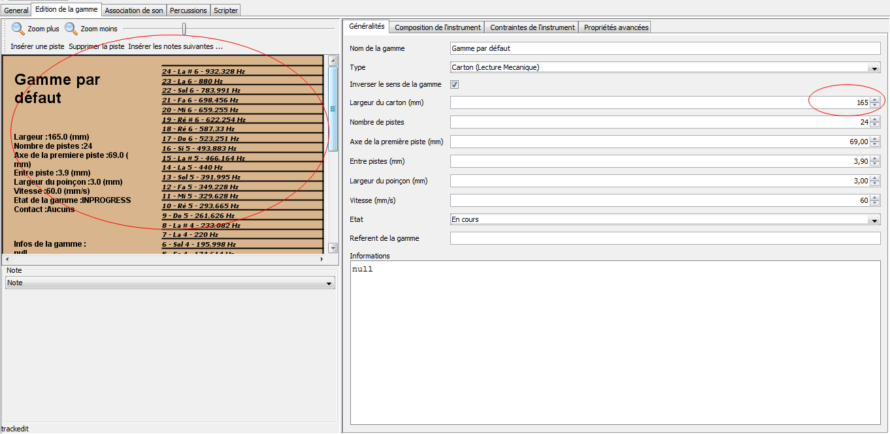
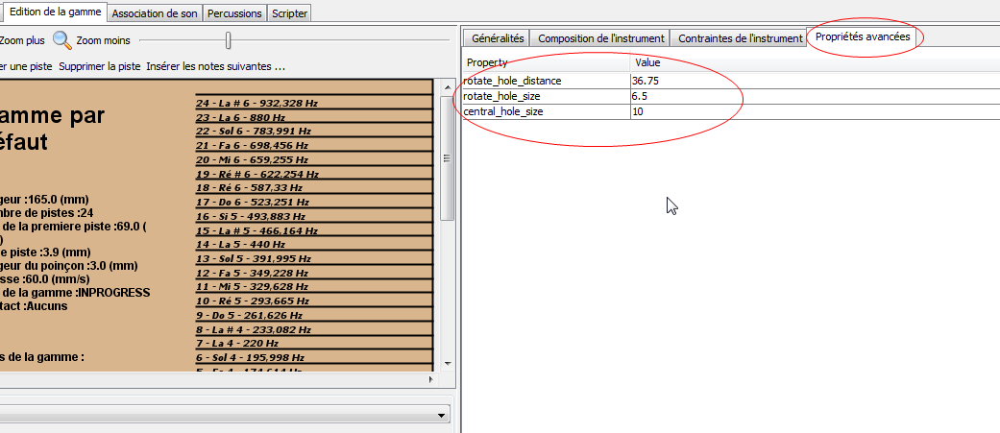
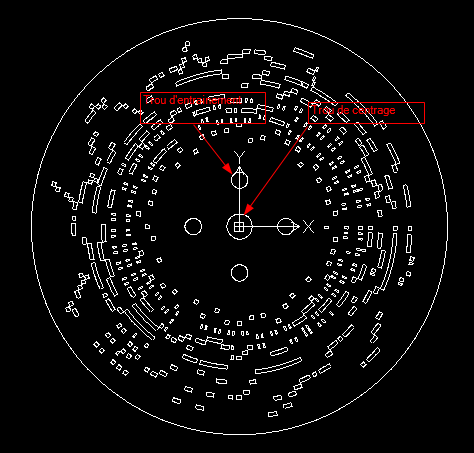

Création d'instruments dans aprint studio pour des disques
APrint Studio peut être utilisé pour la construction de carton perforés type ariston. La gamme peut être décrite de la même façon, cependant certains paramètres peuvent avoir une signification adaptée par rapport aux disques.
Ces différences sont utilisées par l'outil d'export de disque en DXF.

Installation du script d'export en DXF des disques
Les étapes doivent être executées scrupuleusement en attendant la mise en place d'une extension.
- Fermer aprint studio
- Recuperez les elements à télécharger pour le faire avec aprint
- Copier le fichier dexefer.jar dans le répertoire aprintstudio situé dans le répertoire utilisateur (sur mon poste, cela se situe dans C:\Users\use\aprintstudio car mon login de connexion windows est use)
- Ouvrez aprint studio et faire glisser dans la drop zone,le script DXF Disque.aprintbookgroovyscript
L'installation est terminée,
vous avez alors dans la vision carton, un quick script DXF Disque créant le fichier DXF associé au carton

Le fichier resultat est placé dans le répertoire affiché dans la console
Comment décrire un instrument de type "Disque" utilisable avec le script
Compléments dans la description de la gamme de l'instrument
La gamme est décrite dans aprint studio par rapport au centre du disque. La référence est alors indiquée en bas, comme ci dessous.

Ainsi :
- la référence de la gamme est placée en bas
- La largeur de la gamme indique le Rayon du disque
Les autres paramètres restent valables (axe de la 1ere piste, entre piste, largeur du poinçon ...)
dans l'éditeur de gamme, ceci se présente ainsi :

Autres paramètres associés à la gamme
D'autres paramètres doivent être indiqués dans la gamme pour pouvoir générer l'image DXF du disque. Les gammes peuvent mémoriser des paramètres supplémentaires pouvant être exploitées par des outils spécifiques. On indique ici les paramètres supplémentaires

Parametre central_hole_size
ce paramètre indique le Rayon du trou central du disque
Parametre rotate_hole_size
ce paramètre indique le rayon des trous d'entrainement
Parametre rotate_hole_distance
ce paramètre indique la distance au centre des trous d'entraitement

Programme associé
// test d'export DXF avec dexefer
import org.dexefer.*
import org.dexefer.entities.*
import org.dexefer.tables.*
import org.barrelorgandiscovery.virtualbook.*
def pt(x, y) {
return new DXFPoint(x, y)
}
def line(from, to) {
return new Line(from, to)
}
// mise en place du fichier
d = new DXFFile()
d.tables.add(new VPort(pt(0,0), 1))
// calcul de la longueur
s = virtualbook.scale
longueur = s.timeToMM(virtualbook.length)
print "Longueur du carton à transformer en cercle : " + longueur + " mm \n"
def arcpt(double angle1, double distanceCenter, double offsetx = 0, double offsety = 0)
{
pt(distanceCenter * Math.cos(angle1) + offsetx, distanceCenter * Math.sin(angle1) + offsety)
}
def drawArc(double angle1, double angle2, double distanceCenter, double x, double y,int nbpt)
{
(1..nbpt).each {
double a = (angle2 - angle1)/nbpt * (it - 1) + angle1;
double a2 = (angle2 - angle1)/nbpt * it + angle1;
d.entities.add(line(arcpt(a,distanceCenter, x, y),arcpt(a2,distanceCenter, x, y)))
}
}
def drawArc(double angle1, double angle2, double distanceCenter, int nbpt)
{
drawArc( angle1, angle2, distanceCenter, 0 , 0, nbpt)
}
def drawArc(double angle1, double angle2, double distanceCenter)
{
drawArc(angle1,angle2,distanceCenter,10)
}
def drawHole(Hole h) {
def c = { l -> s.timeToMM(l)/longueur * 2*Math.PI }
def start = c(h.timestamp);
def end = c(h.timestamp + h.length);
def axe = h.track * s.intertrackHeight + s.firstTrackAxis
def axeb = axe - s.trackWidth / 2.0
def axet = axe + s.trackWidth / 2.0
drawArc(start,end,axeb)
drawArc(start,end, axet)
d.entities.add(line(arcpt(start,axeb),arcpt(start,axet)))
d.entities.add(line(arcpt(end,axeb),arcpt(end,axet)))
}
def readDoubleProperty(String name)
{
def val = s.getProperty(name)
if (val == null)
throw new Exception("la propriete etendue " + name + " n'a pas été trouvée dans la définition de la gamme de l'instrument");
double valeur = Double.parseDouble(val)
valeur
}
print "Dessin du contour \n"
// dessin du contour, on utilise la largeur de la gamme
// pour la rayon du disque
drawArc(0,2*Math.PI, s.width, 100)
print "Dessin du trou central \n"
// dessin du trou central
def rayontrou = readDoubleProperty("central_hole_size")
drawArc(0,2*Math.PI, rayontrou, 100)
print "Dessin des trous d'entraitement \n"
// dessin des trous de centrage
def tailletrouscentrage = readDoubleProperty("rotate_hole_size")
def distancecentrale = readDoubleProperty("rotate_hole_distance")
(0..3).each {
def angled = it * Math.PI / 2.0
drawArc(0, 2*Math.PI, tailletrouscentrage,
distancecentrale * Math.cos(angled) ,
distancecentrale * Math.sin(angled), 100)
}
print "Dessin des trous\n"
// dessin des trous
virtualbook.holesCopy.each {
drawHole(it)
}
// ecriture du resultat
print "Ecriture du resultat \n"
def f = File.createTempFile("test", ".dxf")
def fos = new BufferedOutputStream(new FileOutputStream(f))
d.write(fos)
fos.close()
print "Fichier de resultat créé :" + f.absolutePath + "\n"